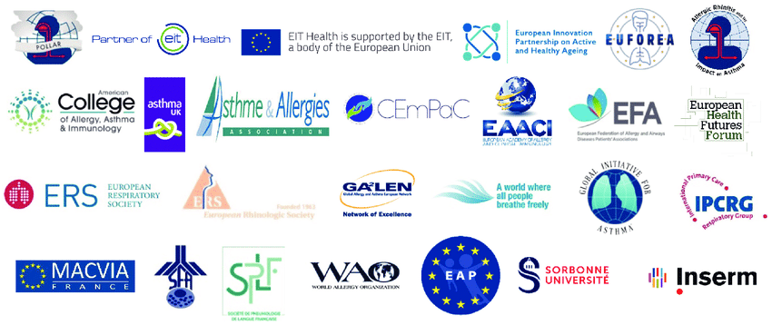
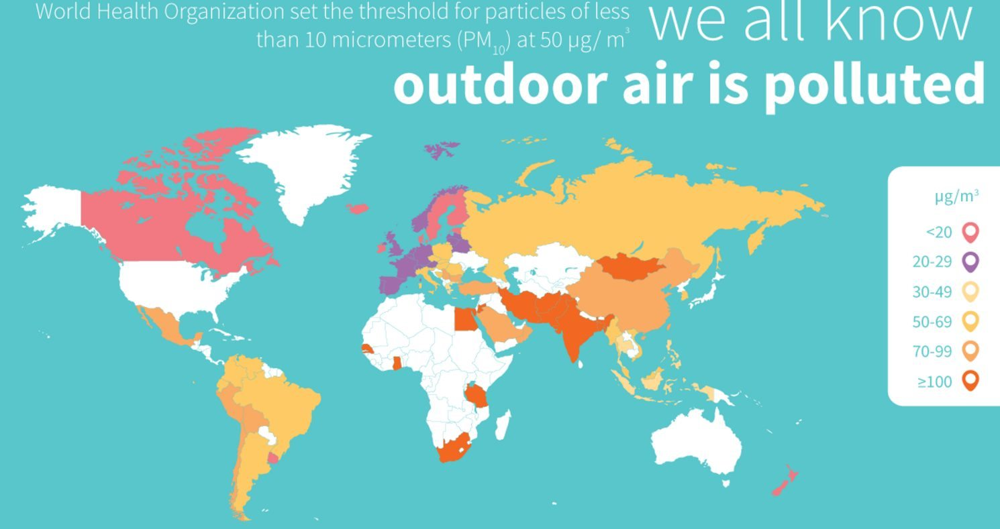

Organizations are a big part of keeping the world's air clean. They use different techniques for making the air cleaner. These organizations help with people who have asthma, allergies, and the respiratory system problems. Here are some organizations that help with those things:
They provide the people who have those problem with anything they need to keeps their lungs and breathing healthy. Some places need it more than others. For example, in this map there are places who have tons of air pollution, and places with little to no pollution.
If these organizations keep impacting the world, we the people will be healthier and have no problem breathing. Hopefully that will happen soon. If more and more places become polluted, then it will take a lot of effort and time to clean it up. Most likely at this rate it won't come to that. If you want to read more about this, then click the links at the bottom.